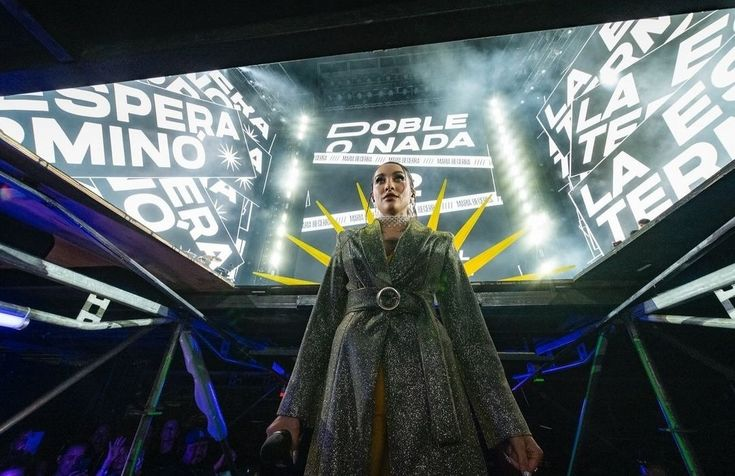

▶
LA NENA DE ARGENTINA
Música, actitud y una voz que representa a una nueva generación.
UNA NUEVA GENERACIÓN
María de los Ángeles Becerra, conocida artísticamente como María Becerra, es una cantante, compositora y exyoutuber argentina apodada “La Nena de Argentina” y referente del pop urbano y reguetón latino. Tras hacerse viral en YouTube, debutó musicalmente en 2019 con el EP 222 y alcanzó fama internacional con High. Ha lanzado álbumes como Animal, La nena de Argentina y Quimera, y colaborado con figuras como J Balvin, Tini y Camila Cabello
DISCOGRAFÍA

ESCUCHÁ SUS ÉXITOS

TRAYECTORIA
María Becerra comenzó su camino creando contenido en internet antes de desarrollar una carrera musical.
Con el paso de los años se convirtió en una de las figuras destacadas de la música urbana y pop latina.
MARÍA BECERRA
MOMENTOS

/cloudfront-us-east-1.images.arcpublishing.com/artear/V2F23FP6XJGUBNHNQZXXBWMHXY.jpg)


VIDEOS
MARÍA BECERRA